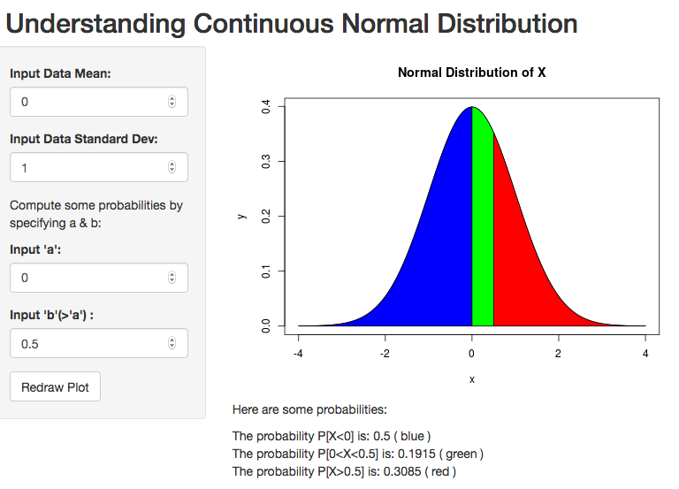

Your Normal Distribution
Would you like to a see a plot of normal distribution whose parameters you can change?
Would you like to see geometric interpretation of the probabilities computed under the distribution?
Then here is a short presentation of the application.
The Application
If you go to the application's web site, this is what you will see, the plot of standard normal distribution:

A Few Usual Probabilities
If you want to know the value of a typical probability of some range, say, P[a<X<b] given that the mean and standard deviations are set 6 and 1.0, and a and b are set to 4 and 7, respectively, the application will compute it for you (rounded off) as:
## [1] "P[4<X<7] = 0.8186"